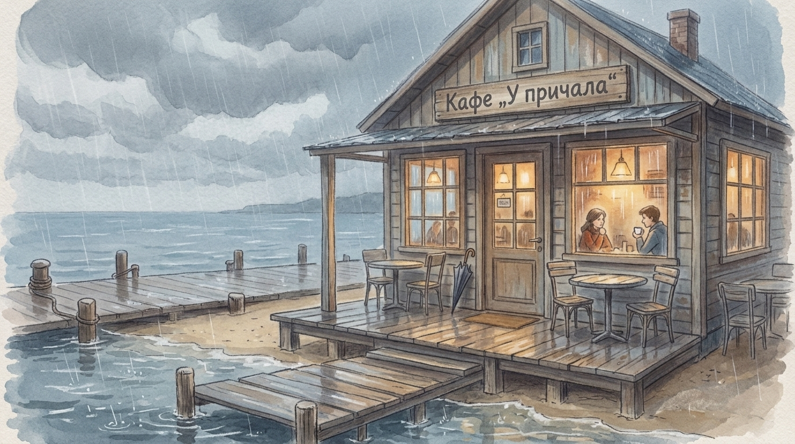

Как проходить медитацию от Qwen
- Найдите удобное место. Устройтесь так, чтобы тело было расслаблено и ничего Вас не отвлекало.
- Включите аудио. Нажмите кнопку проигрывателя и разрешите себе никуда не спешить.
- Следуйте за голосом. Вы можете мягко следить взглядом за текстом на экране или просто закрыть глаза.
- Если мысли уплывают — не укоряйте себя. Просто плавно возвращайте внимание к истории и звучанию голоса.
Готовы? Тогда давайте начнём
